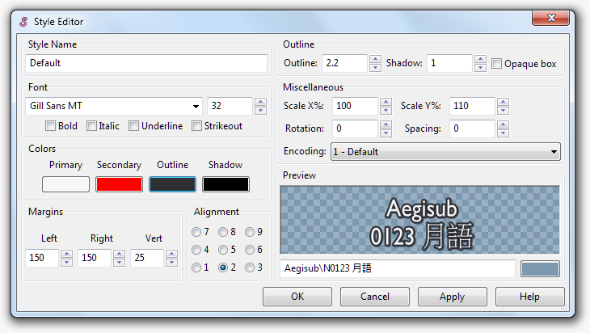

A style in the ASS format is a set of typographic formatting rules that is
applied to dialogue lines. The style parameters can be overridden with
override tags; the styles exist so that you won't have to type out
all the overrides for each line.
The styles manager
Aegisub's styles manager tool (accessed from the Subtitles menu) provides
various means of organizing, saving and editing styles. It looks like this:

As you can see, the window is divided into two halves. The right half displays
all styles that you currently have accessible in your currently loaded script;
the left represents a style storage. Style storages are used by Aegisub to let
you save styles and quickly import them into scripts. You can have as many
storages as you want; some people prefer to keep all their styles in one
storage, others sort their styles by font, by show or alphabetically. The drop
down menu at the top lets you choose what storage you want to view.
In the bottom part of the window there's two almost identical sets of buttons;
one set for the storage and one for the current script. They are:
- New
- Create a new style, either in the storage or in the current script.
- Edit
- Edit the selected style using the style editor (see below).
- Copy
- Create a copy of the selected style and bring up the style editor for it.
- Delete
- Delete the selected style(s).
- Copy to script and Copy to storage
- Copies the selected styles between the storage and the current script.
- Import from script
- Import one or more styles from another script to the current one.
Pressing Ctrl-C in the styles manager will copy the selected style(s) to the
clipboard as a text string. This also works the other way around; you can copy
one or more style lines from another program and press Ctrl-V (paste) in the
styles manager; this will insert them into the current script.
The style editor
Pressing the "Edit" button or double clicking a style name will bring up the
style editor, which lets you tweak all the parameters available. Note: some
parameters that are available as override tags (i.e. \be) are not available
as style parameters; conversely, some parameters that are available in the
styles editor (i.e. the "opaque box" outline option) are not available as a
style override. This is an unfortunate and occasionally annoying format
limitation.
To return to the style editor:

- Style name
- The name of the style. You can't have two styles with the same name in the
same script.
- Font
- This section controls the font settings. The drop down menu lets you choose
the typeface (any font installed on your system will show up in this list) and
the number to the right controls the size in points. The check boxes below set
the bold/italic/underline/strikeout parameters.
- Colors
- This controls the four text colors (primary, secondary, outline and shadow).
The meaning of each of them is as follows:
- Primary
- The main "fill" color of the body of the text.
- Secondary
- Secondary fill color, used for karaoke effects (see
\k and its
relatives on the override tags page).
- Outline
- The border color of the text.
- Shadow
- The color of the shadow, which is displayed under the main text and
offset by the shadow width defined to the right.
The four colored boxes show you the current color for each of the four text
colors; clicking on them opens the color picker.
- Margins
- Controls how close to the borders of the video frame the text will be
positioned (and hence also when automatic line breaking will kick in; but do
note that there is no option for text justification). Each value (left, right,
vertical) is given in script resolution pixels (see script
properties). For alignments (
\an) 1-3, the vertical margin is
relative to the bottom of the video frame; for 4-6 it doesn't have any meaning,
and for 7-9 it is relative to the top of the video frame.
- Alignment
- Controls the alignment of the text. The numbers correspond to the arguments
to the
\an tag. Alignments 1, 4 and 7 are flush left; 3, 6 and 9 are flush
right; 2, 5 and 8 are centered. 1, 2 and 3 are "subtitles" (i.e. drawn at the
bottom of the frame); 4, 5 and 6 are "midtitles" (i.e. entered vertically on
the frame); 7, 8 and 9 are "toptitles" (i.e. drawn at the top of the frame). Do
note that there is no such thing as a justified alignment; this is a format
limitation.
- Outline
- Controls the outline (border) thickness (and style) and the shadow offset.
- For the outline, the number is the thickness of the border in script pixels
if ScaledBorderAndShadow is enabled (see script properties);
if it is disabled the thickness is given in video pixels instead. Setting
it to 0 disables the outline.
- The shadow on the other hand is a copy of the main text, shifted down and
to the right the specified distance. The distance is in script pixels if
ScaledBorderAndShadow is enabled, and video pixels otherwise. Setting it to
0 disables shadow.
- Finally, the check box marked "Opaque box" controls whether the outline
should be drawn as described above (which happens if it is unticked), or
replaced by an opaque background bounding box. Note that the rendering of
Opaque box outlines is broken when the font scale is anything other than
100%.
- Miscellaneous
- This section has various other parameters, namely:
- Scale X/Y
- Controls text stretching in the horizontal (X) and vertical (Y) direction
respectively. The value is given in percent, so 100 means no stretching is
done. You should not use this for normal text sizing; use the point value
in the Font area instead since that uses hinting information from the font.
- Rotation
- Controls rotation of the text. The value is the angle of the rotation in
degrees (360 degrees to a full circle) and may be negative or larger than
360 (setting it to 360, 720 etc. is the same as setting it to 0 except for
when animated transforms are involved).
- Spacing
- Controls the horizontal spacing between letters. 0 means the font
defaults are used. May be negative for less spacing, or positive for more.
The value is the additional gap in pixels between each character; whether
these are script pixels or video pixels is not well defined.
- Encoding
- Controls which codepage is used to map codepoints to glyphs; it has
nothing to do with the actual text encoding of the script. This is only
meaningful on Windows using VSFilter, where it is used to get some old
(particularly Japanese) fonts without proper Unicode mappings to render
properly. On other systems and renderers, Freetype2 provides the proper
mappings. If you didn't understand a word of the above, pretend this
setting doesn't exist, as it is rarely important.
- Preview
- Shows a preview of what the text will look like using the current style
parameters. The text field lets you input some sample text to preview, and
the colored box controls the color of the background.